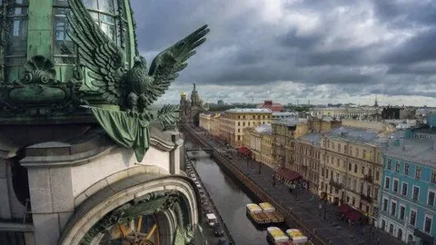

Санкт-Петербург — город федерального значения, второй по численности населения в России.
Основан 16 (27) мая 1703 года царём Петром I. Назван в честь апостола Петра — небесного покровителя основателя.
Расположен на северо-западе России, в пределах Приневской низменности, в устье реки Невы и на побережье Финского залива Балтийского моря, а также на многочисленных островах Невской дельты. Граничит с Ленинградской областью, имеет морские границы с Финляндией и Эстонией
email----jtsutrhgfhthghh@rgrgfr.ru